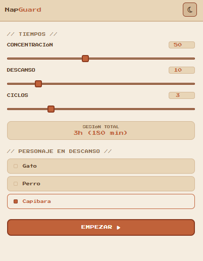

App de concentración estilo Pomodoro que bloquea tu escritorio durante el descanso. Sin distracciones. Sin excusas.

Configura tu sesión
Personaliza el blocker
Modo descanso
Durante el descanso bloquea todo el escritorio — apps, navegador y juegos.
Tiempo de concentración, descanso y ciclos totalmente a tu gusto.
Busca y elige cualquier GIF o sticker via Giphy para tu pantalla de descanso.
Sube tus propias imágenes, GIFs o stickers favoritos como fondo de descanso.
Personaliza color, difuminado, tamaño, posición y movimiento del blocker.
Aviso del sistema al completar todos tus ciclos de concentración.
Solo para Windows. Sin cuenta. Sin suscripción.
Descargar NapGuard v1.0.7Windows puede pedir confirmación al abrir el instalador por primera vez. Es normal en apps sin firma digital — solo haz clic en "Más información" → "Ejecutar de todas formas".
Una extensión para bloquear pestañas distractoras directamente desde tu navegador.